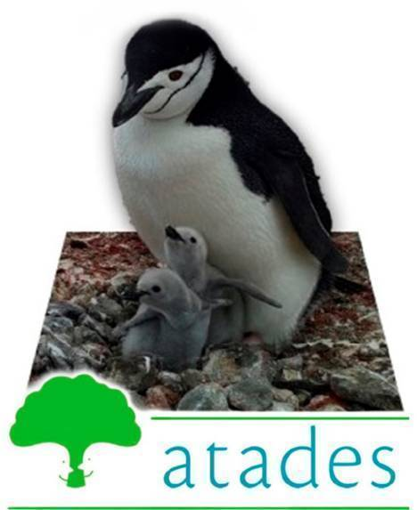
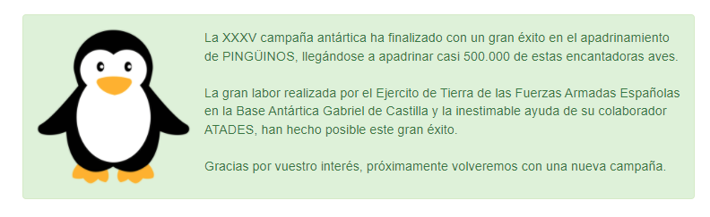

APADRINA TU PINGÜINO
Existe la forma de que puedas apadrinar un pingüino y puedes hasta ponerle un mote. Es totalmente gratuito y abierto a personas de todo el mundo.
Además, si el padrino lo desea puede hacer una donación a Atades y colaborar con su causa.
Una acción que ayudará a ayudará a difundir el compromiso con el cuidado del medio ambiente. Hagamos de nuestro planeta un lugar más limpio, saludable y equilibrado con la naturaleza.
El proceso es tan sencillo como rellenar el formulario que ofrecen en el enlace de la página web del . Recibes un diploma con la foto y el número de registro del pingüino asignado.

Al hacer clic en la imagen, nos mandará a la página de la Campaña Antártica del Ministerio de Defensa.
En la última campana (XXXV Campaña Antártica) se logró un record de 486.520 pingüinos apadrinados.
